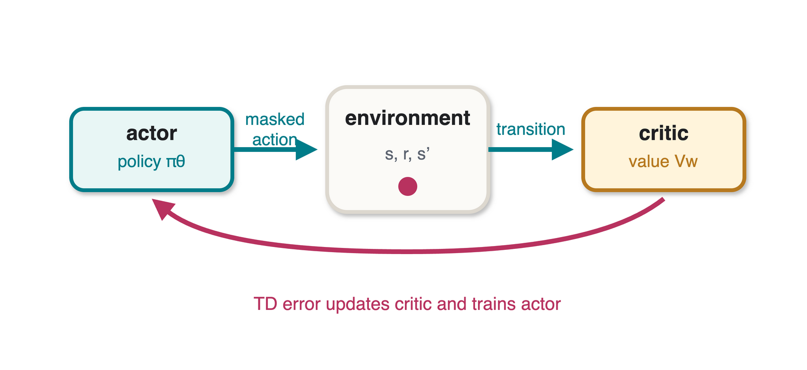

Homework 6: Actor-Critic for Buckshot Roulette
Policy learning with action masking and a learned value baseline
hw6submission.pdf
This deadline is after Thanksgiving Break and before the university’s December 7-9 Prep Days. No homework is due during Prep Days.
Includes the game environment, unfinished agent networks, action-mask helper, training/evaluation driver, and dependency list.
Upload one PDF named hw6submission.pdf to Canvas. Include an implementation explanation, a learning-progress figure or table, a final evaluation, and the complete source code for the agent and training loop.
Environment overview
Two agents take turns using items and choosing whether to shoot themselves or the opponent. The shotgun contains a shuffled mixture of live and blank shells. The starter driver exposes an 18-value observation and seven action indices:
| Action | Meaning |
|---|---|
0 |
Use handsaw |
1 |
Use magnifying glass |
2 |
Use cigarette |
3 |
Use beer |
4 |
Use handcuffs |
5 |
Shoot self |
6 |
Shoot opponent |
An item action is legal only when the acting player owns that item. Shooting actions are always available. The exact constants and state-transition code in the downloadable course-site package are authoritative.
Observation layout
The environment constructs every observation from the acting player’s point of view. Naming the slices early prevents accidental off-by-one errors in the networks and action mask.
| Indices | Meaning |
|---|---|
0, 1 |
current player’s HP; other player’s HP |
2, 3 |
remaining live shells; remaining blank shells |
4 |
current player’s knowledge of the next shell: -1, 0, or 1 |
5 |
whether the other player knows the next shell |
6, 7 |
handcuff/skip flag; boosted-damage flag |
8:13 |
other player’s counts of the five items |
13:18 |
current player’s counts of the five items |
The five-item order is handsaw, magnifying glass, cigarette, beer, and handcuffs.
The older PDF said that each player starts with 2 HP, while its accompanying driver instantiated the game with 7 HP. This web specification resolves that conflict: use the max_hp value supplied by the downloadable environment without hard-coding a second value in your agent.
Game rules used by the starter
- The shotgun is loaded with 3-7 shells and contains at least one live and one blank shell.
- Both agents draw items when the shotgun is reloaded, subject to the inventory limit.
- A live shell damages its target; a blank self-shot lets the acting player retain control.
- If no live shell remains, the driver reloads the shotgun even if blank shells remain.
- Handsaw: doubles the next live-shot damage while its effect is active.
- Magnifying glass: reveals the next shell to the acting player.
- Cigarette: restores one HP, up to
max_hp. - Beer: ejects the current shell without firing it.
- Handcuffs: causes the opponent to skip the next turn.
- The game ends when one player’s HP reaches zero.

Actor-Critic background
The actor and critic solve different pieces of the learning problem:
- the actor represents a policy \(\pi_\theta(a\mid s)\) and chooses an action;
- the critic estimates \(V_w(s)\), the expected future return from a state; and
- the TD error compares the observed one-step return with the critic’s current estimate.
The critic reduces the variance of the policy update by supplying a learned baseline. A positive TD error makes the selected action more likely; a negative TD error makes it less likely. Because the environment changes after every item use as well as after a shot, each callback should be treated as a transition with a new observation.
Action-mask helper
The downloadable starter includes the action constants and a random legal-action helper. The following Torch version produces the same legality mask and applies it directly to the actor’s logits before constructing a categorical distribution.
import torch
from torch.distributions import Categorical
NUM_ACTIONS = 7
MY_ITEMS = slice(13, 18)
def legal_action_mask(info, device=None):
mask = torch.ones(NUM_ACTIONS, dtype=torch.bool, device=device)
item_counts = torch.as_tensor(
info[MY_ITEMS], dtype=torch.float32, device=device
)
mask[:5] = item_counts > 0
return mask
def masked_policy(logits, info):
mask = legal_action_mask(info, device=logits.device)
masked_logits = logits.masked_fill(~mask, float("-inf"))
return Categorical(logits=masked_logits)Shooting actions remain legal, so the distribution always has at least two finite logits. Store the chosen action’s log-probability and the critic value needed for the next update; do not recompute the log-probability later from changed network parameters.
This is the interface used by the driver. Fill in the marked sections; do not change the method names or arguments.
import random
import torch
class ActorNetwork(torch.nn.Module):
def __init__(self, input_dim, output_dim, hidden_dim=128):
super().__init__()
# Define the policy network.
...
def forward(self, info):
# Return seven unnormalized action logits.
...
class CriticNetwork(torch.nn.Module):
def __init__(self, input_dim, hidden_dim=128):
super().__init__()
# Define the value network.
...
def forward(self, info):
# Return one scalar value per observation.
...
class RandomAgent:
def choose_action(self, info):
legal = legal_action_mask(info).nonzero().flatten().tolist()
return random.choice(legal)
def see_result(self, result, info, training_flag=False):
pass
class RLAgent:
def __init__(self):
# Create networks, optimizers, and episode state.
...
def train(self, info, result, terminal=False):
# Perform one Actor-Critic update.
...
def choose_action(self, info):
# Store what train() will need, then return an action index.
...
def see_result(self, result, info, training_flag=False):
# The archived driver uses a nonzero result only at a terminal.
...Part 1: Implement Actor-Critic
Complete the unfinished networks and RLAgent methods in the starter. Your implementation must include:
- Actor network: maps the observation to a categorical policy over seven actions.
- Action mask: assigns zero probability to an unavailable item action before sampling. Avoid a post-hoc resampling loop that changes the intended distribution silently.
- Critic network: maps the observation to one scalar estimate \(V(s)\).
- Action selection: samples from the policy during training. State and justify the evaluation-time choice, such as sampling or greedy selection.
- Critic update: learns from a temporal-difference target.
- Actor update: uses the selected action’s log-probability and an advantage based on the TD error.
- Terminal handling: uses zero bootstrap value after a terminal transition and clears any episode-specific stored state.
For a nonterminal transition \((s_t,a_t,r_{t+1},s_{t+1})\), a standard one-step target is
\[y_t = r_{t+1} + \gamma V(s_{t+1}),\]
with TD error
\[\delta_t = y_t - V(s_t).\]
For a terminal transition, use \(y_t=r_{t+1}\). Detach the target or advantage where appropriate so gradients flow through the intended loss only.
Part 2: Train and evaluate
Train the learning agent through self-play or against a clearly identified training opponent. At regular checkpoints, freeze learning and evaluate the current policy against the provided random agent.
Evaluation must:
- use at least 200 independent games per checkpoint;
- disable parameter updates;
- alternate or randomize which agent occupies each player slot;
- report the random seed policy; and
- use the same evaluation procedure at every checkpoint.
Plot checkpoint on the x-axis and winning rate on the y-axis. A table may accompany the plot, but does not replace axis labels or an explanation of the evaluation setup.
Required report contents
- State and actions: summarize the observation, action encoding, and invalid-action mask.
- Networks: give layer sizes, activations, and output interpretation for actor and critic.
- Learning rule: state \(\gamma\), loss functions, optimizers, learning rates, and update timing. Explain terminal handling.
- Training setup: report number of games, opponents, seeds, and relevant hardware/runtime details.
- Results: show the learning-progress plot or table and a final held-out winning rate against the random agent.
- Discussion: interpret the trend, variability, and at least one limitation of the evaluation.
- Code appendix: include all agent and training-loop source code used for the reported run.
Pre-submission checks
- The policy never selects an item with inventory count zero.
- Policy probabilities are finite and sum to one after masking.
- Terminal targets do not bootstrap from a next-state value.
- Evaluation does not update either network.
- Both player positions are represented fairly in evaluation.
- The submitted code can reproduce the reported configuration.